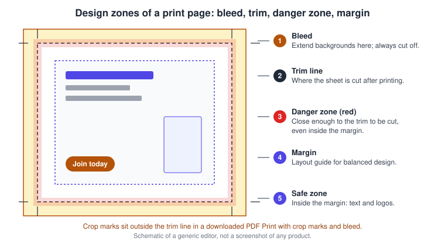
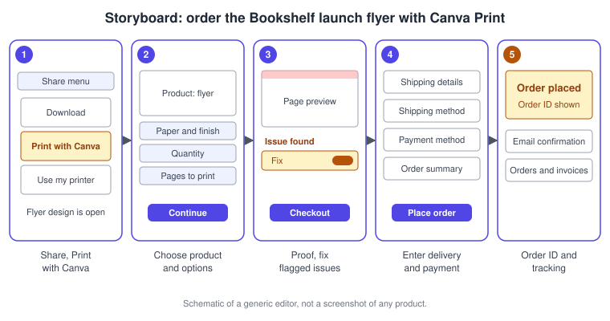
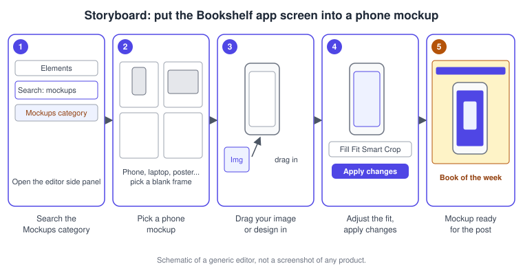

Print and Mockups
|
This content was generated with the assistance of AI and should be verified against the official documentation before being relied on in production. |
This page was checked against the official Canva Help Center on 2026-11-07. It covers two output paths that end in something physical or photographic: Canva Print, the service that prints your design and delivers it (or lets you collect it in a store), and Mockups, the editor feature that places your artwork on a product or device photo. Both are part of the Canva editor and are generally available, not betas.
Plans: designing for print and placing an order are not tied to a paid plan in the Help Center articles used here; what limits ordering is where you live, whether your design is in a supported print size and whether a team or Enterprise administrator has switched ordering off. Placing mockups from the Mockups category is likewise not restricted in the Mockups article. Creating your own custom mockup template is stated there to be available with Pro, Teams, Enterprise, Education and Nonprofit subscriptions, so check your own account if you are on Business. Prices of print products and of plans are not repeated here: product prices are shown while you configure an order, and plan prices are published at https://www.canva.com/pricing/. No tool on this page draws on the Canva AI allowance that Plans, Pricing and AI Allowance describes; the custom mockup template feature analyses your photo automatically, but the Help Center article does not assign it an AI tier.
The running example is Bookshelf, the book catalogue and reading-list app designed in the Figma sub-section. Its launch campaign needs a printed flyer for the book-club meetup, a set of bookmarks to hand out, and a polished picture of the app on a phone for the social posts. This page prepares the flyer, orders it, and builds the phone mockup. The editor itself is described on Editor Tour, and the file formats that a print shop or home printer may ask for are on Downloading and File Formats.
Two ways to get a design onto paper
Canva offers several routes from a finished design to paper, and they differ in who does the printing and how much they check for you.
| Route | What happens | Best for |
|---|---|---|
Print with Canva (Canva Print) |
You order from the editor; Canva prints on its materials and ships to you, or you pick up in a store where that is offered |
Professional results on business cards, flyers, posters, stickers, mugs, apparel and more |
Use my printer |
Canva prepares a print file and opens your system print dialog |
Quick proofs and short runs on a home or office printer |
Download a PDF Print |
You export a print-ready file and give it to any print provider |
Printing outside Canva, or in a country without Canva Print delivery |
Canva Print is available in four regions: North America (US and Canada) and the Caribbean, Europe and the UK, Asia, and Central and South America. Each region has its own list of products, so the Help Center sends you to the What We Print page for the complete list and to the Where Canva prints and ships page to check your own country. Canva also states that it plants one tree for every print order it receives.
Where print lives in the editor and on the homepage
There are three entry points. On the homepage, selecting Print opens, on desktop, the Print tab of the Create menu so you can start a blank print design; on mobile it opens a guided flow where you choose a blank design or browse templates. The Print Shop lets you browse products before you design: on desktop it is reached from the menu icon in the side navigation (under More if you do not see it), and on the mobile app from Create and then More. In an open design, the Print with Canva button sits in the top menu or, if you do not see it, under Share. On mobile the same action is a truck icon in the header or, failing that, Print with Canva under the share icon.
Canva says it is rolling out navigation changes gradually, so labels and positions may differ from what you see. If you cannot find an entry, look under More.
Product choices
The Print Shop lists products such as business cards, flyers, invitations, stickers, brochures, greeting cards and apparel; the live list depends on your region. In the Print Shop you choose a product, read its details and specifications, choose options such as paper type, finish and quantity, and then select Start designing. In the United States, some products show a star rating and review count; a rating appears once a product has at least five reviews from people who bought it.
Dynamic guides are an extra layer for a few products. When the print order panel is open, trifold brochures, bound documents, notebooks and wall calendars show where the trim, fold or binding falls, so important elements do not disappear into a fold or binding. A wall calendar needs 26 pages and a bound document at least 10.
Designing so the print comes out right
A screen has no edges to cut and no ink, so print adds rules that a screen design can ignore. Canva documents five zones, working from the middle of the page outward.

-
The margin is a layout guide for balanced design.
-
The safe zone sits inside the margins: keep text and logos here.
-
The danger zone (red zone) is Canva’s live print check during proofing: red means an element is close enough to the trim to be cut, even if it is within the margins.
-
The trim line is where the design is cut after printing.
-
The bleed is the area just past the trim line. Extend backgrounds into it, never text, because it is always cut off.
Margins, bleed, rulers and crop marks
All four are switched on from the File menu under Rulers and guides. Margins are the broken-line border you keep key content inside; bleed shows as dashed lines near the edge. The default bleed is 0.125 inches (3.175 mm) on all sides for products that are trimmed, and it does not apply to products where ink does not reach the edge, such as printed envelopes, apparel and drinkware. For example, an A4 design with bleed exports at about 222 mm by 309 mm instead of the standard 216 mm by 303 mm printable area. The sizes of margins, bleed and crop marks are fixed to Canva’s print specifications and cannot be changed. Rulers work on a computer only, and they show the canvas size in the design’s own unit (pixels for a pixel design), not the physical product. None of these tools is available yet in Canva Docs, and the Show margins command may be missing in some document types or older templates.
If you see white gaps around the edges of a design, stretch the background so that it covers the bleed. If you print outside Canva Print, ask your provider about its bleed requirement, because it may trim differently. Crop marks are added when you download: choose Share, then Download, set the file type to PDF and use the print preset with the crop marks and bleed option. Phones and tablets differ: guides you can set on desktop are also reachable from More on the mobile toolbar, but rulers are not offered.
Print colours: RGB and CMYK
Screens mix red, green and blue light (RGB), which can produce very bright, saturated colours. Printers layer cyan, magenta, yellow and black inks (CMYK), a more limited range. When a design is sent for printing, Canva converts colours automatically to the closest CMYK match. Most colours convert well, but ultra-bright ones, such as electric blues or hot pinks, fall out of gamut and print softer or more muted. Canva therefore recommends choosing print-safe colours from the start, for example slightly lighter versions of very saturated colours.
The editor works in hex codes, a compact form of RGB values. To work with CMYK colours, convert CMYK values to hex with an online colour picker and enter those hex codes in the editor’s colour palette or on an element. You can also download a CMYK file afterwards. Material matters as well: gloss and matte paper show very similar colour accuracy, uncoated and specialty papers (hemp, for example) can look softer and warmer, and non-paper products such as mugs, mouse pads, tote bags and apparel use different printing methods, so Canva suggests ordering one printed copy as a test before a large order. Colour palettes and brand colours are covered on Colour, Gradients and Palettes.
Layout for print
Plan a print page at its final size from the beginning. For Canva Print you can resize an existing design to a supported print size from the Share menu: the design is resized automatically to fit the chosen product, the original and the resized copy both appear in Projects, and the Help Center recommends adjusting elements afterwards because they often move during the resize. Guides, grids and frames are explained on Frames, Grids, Guides and Print Layout, and resizing designs in bulk on Resize, Bulk Create and Translate.
Proofing
Canva’s support team does not review designs before printing, so the proof is your quality control. There are two layers.
Automated proofing detects issues in your design and shows them per page. Switch a toggle on to apply a recommended fix and off to undo it, or use the fix-all toggle (labelled Automagically fix) for every recommended fix; the changes are reflected in your design. For an issue you want to fix by hand, select Learn more for a short description. Canva notes that the feature is still being improved and may not detect every issue.
Manual proofing covers what the checker cannot judge:
-
Turn on bleed and margins and confirm that elements sit inside the margins.
-
Check font size. Different products have different recommended minimums, and Canva generally advises not going below size 7; its checker flags text below the minimum. Zoom to 100 percent to judge size.
-
Proofread names, dates, addresses, email addresses and social handles.
-
For t-shirts, keep the background transparent (a backdrop view is available under File, Settings, Show Backdrop) and delete any background colour, or it will print.
-
Check image quality. Canva recommends images of 300 dpi for print, and zooming to 200 percent shows blur or pixelation. Library images are high resolution. Low-resolution images, such as old family photos, can be used smaller in the design.
-
Print the proof. Download the PDF proof during ordering, or a PDF Print otherwise, and print it at 100 percent scale (check your printer’s scale setting). Crop marks, white edges and a watermark on the proof are guides for the printers and do not appear on the printed order.
-
For multi-page designs, select the correct pages to print and, for two-sided products, which page is the front and which is the back.
Procedure 1: prepare and order the Bookshelf launch flyer
The flyer for the book-club meetup is an A4-style page with the Bookshelf logo, the "Book of the week" cover and a call to action. These steps prepare it and place a Canva Print order on desktop.
-
Open the flyer design. Open File, then Rulers and guides, and select Show margins, Show print bleed and Show rulers and guides.
-
Move the title, logo and call to action inside the margins. Stretch the background colour into the bleed.
-
Replace any very bright accent colour with a slightly lighter, print-safe one. Enter the converted hex code in the colour palette.
-
In the top menu, select Print with Canva (or Share, then Print with Canva). If your design is not in a supported size, choose a print product and let Canva resize it, then fix any elements that moved.
-
Choose the specifications: product, paper and finish, quantity, and the pages to print. Select Continue.
-
In the proofing step, review the issues listed for each page. Switch on Automagically fix or fix items one by one. Download the PDF proof if you want to check it at 100 percent scale.
-
Select Checkout, or Add to cart if you are ordering more items such as the bookmarks. Enter or confirm the shipping details and choose a shipping method and payment method. If you have a coupon, enter it and select Apply.
-
Review the order summary and select Place order.

What happens after the order
After you place the order a pop-up shows the order ID and a confirmation arrives by email. Apart from the shipping address, nothing about the design or the order can be changed afterwards; to change it you must cancel the order. In-store pickup orders go to production immediately and cannot be changed or cancelled. Canva does not ship to PO box addresses at the moment. You can follow an order from Settings, then Orders and invoices, and email updates are sent from the time the order goes to production.
The Bookshelf bookmarks follow the same route: they are a different product, so they are added as a separate item to the cart. To print several versions of one design with the same quantity and specifications, use Print as sets, which accepts up to 30 versions in the cart and is available only for certain products in certain countries; in the print panel, the Bulk Print Options beside the page selector appear when the design has at least three pages and enough pages to print two sets. Sets can be single sided or double sided where the product allows it.
In-store pickup
In some parts of the US and Canada you can collect an order at a store instead of having it shipped. If it is offered, the option appears in the Shipping details step as In-store pickup, where you search by street or suburb and pick a store. You can only receive that order at that store, and changing the store after the order is not supported yet. Collect the order after the "ready for pickup" email, with the name the order was placed under (some stores also ask for the phone number). It is held for up to 30 days after that email and then recycled, and store staff cannot change, cancel or refund orders.
When the Print button is missing
The Print with Canva button is hidden when delivery is not available in your location, when the design is not in a supported print size, when a multi-design page you are viewing is not print-compatible (for example a Doc page next to a tote bag page), or when your team or Enterprise administrator has disabled print ordering. Docs, Sheets and Website pages cannot be ordered from Canva Print. In a country without delivery you can still design with the standard print dimensions from the Print Products icon, download a print-ready file and take it to a local printer.
Printing on your own printer
Choose Use my printer to print without ordering. In the editor, open File, then Print and Use my printer, or press Command + P on macOS or Ctrl + P on Windows. The first time you use the shortcut, a prompt asks whether to print on your own printer or order professional prints, and you can set either as the default. Canva prepares the print file, shows progress, and opens the system print dialog where you pick the printer, pages, copies and colour. On a phone or tablet, use the share menu, then More, then Use my printer; printing is not supported from a mobile web browser, only from the Canva mobile app with a printer set up on your device. From the homepage you can print one design at a time, but not files or media, bulk selections or Print with Canva.
Tips from the Help Center: print one design type at a time, set the page size in File for documents, expect that not every home printer supports full bleed or crop marks, and print blended designs (mixed page types) from a web browser or as a PDF. If a design prints sideways or upside down, fix the orientation in the system print window. As an alternative, download a PDF Print and print it with your device. For colour, the print guidance above suggests CMYK-friendly colours.
Mockups in the editor
A mockup places your artwork on a realistic product, device or surface, such as a t-shirt, a website on a laptop, a poster or a phone screen, so you can show how a design looks in use. Mockups live in the editor itself. The standalone Smartmockups.com site, a Canva Group product, was officially shut down on 2024-09-27; Canva said it was concentrating on building mockup tools within Canva.
Where to find Mockups
There are three entry points, on desktop and mobile:
-
Elements in the editor side panel: select the search bar and the Mockups category.
-
Apps in the side panel: search for Mockups, or scroll to More from Canva.
-
The photo editor: select a photo, select Edit and, under Apps, choose Mockups.
You then choose a mockup and drag any image into it. The image can come from the Photos tab or from your Uploads. To reposition or crop the image, select the mockup and use the options that appear, then choose Apply changes.
Custom mockup templates
You can also turn your own photo into a mockup template. Add the photo to your design, select it, choose Edit, then under Apps choose Mockups and Create a mockup template. Canva analyses the photo to find the best surfaces for placing a product, you review the detected surface and select Confirm, and then you drag your design onto it. Fill, Fit or Smart Crop control how it sits, and you can flip or align it. To change the design later, select Detach image and swap in a new one. Premium photos are not supported for this feature, so use your own photos or filter for free ones. Results are best with flat, simple surfaces such as blank mugs or clean device screens, clear high-resolution photos, and uncluttered backgrounds; busy or complex images look less polished. The article also mentions video mockups as an option for livening up a design.
Procedure 2: put the Bookshelf app screen into a phone mockup
The launch posts need a clean picture of the Bookshelf catalogue screen on a phone.
-
Open the "Book of the week" post. In the side panel, select Elements.
-
Select the search bar and choose the Mockups category.
-
Choose a phone mockup and drag it onto the page.
-
Drag the exported Bookshelf screen from Uploads onto the phone screen.
-
Select the mockup and choose Fill, Fit or Smart Crop until the screen is not cropped awkwardly. Reposition it if needed.
-
Select Apply changes. Place the mockup next to the title and run the accessibility checks before you publish.

Common pitfalls
-
Text or a logo placed in the bleed or the danger zone is cut off. Keep it in the safe zone.
-
White edges appear when a background does not reach the bleed.
-
Very saturated screen colours print duller; convert them to print-safe hex values and order a test copy.
-
Low-resolution images look soft in print. Check at 200 percent zoom and prefer 300 dpi images.
-
Print ordering is fixed once placed, apart from the address; proof carefully first.
-
Rulers, margins, bleed and crop marks are not available in Canva Docs, and a Doc, Sheet or Website page cannot be ordered from Canva Print.
-
A mockup of a busy photograph, or one made from a Premium photo, will not work as a custom template.
Where older guides are outdated
| Older statement | Current behaviour | Date |
|---|---|---|
Mockups come from the separate Smartmockups.com site |
Smartmockups.com closed; mockups are built into the Canva editor |
2024-09-27 |
Print is reached from a single fixed menu |
Print starts from the homepage Print entry, the Print Shop, and Print with Canva in the top menu or the Share menu; Canva is changing the navigation gradually |
Checked 2026-11-07 |
Canva matches screen colours to print |
Canva converts RGB to the closest CMYK match, but very bright colours still print softer, so use print-safe colours and test prints |
Checked 2026-11-07 |
The two books used as background for this sub-section describe the Mockups feature and print preparation in general terms; where their menu names differ from the ones above, follow the current names.
Recent changes
-
2024-09-27: Smartmockups.com closed; mockups continue in the Canva editor.
-
Gradual rollout, checked 2026-11-07: Print entry points moved to the homepage Print entry and Print Shop, with Print with Canva in the top menu or under Share.